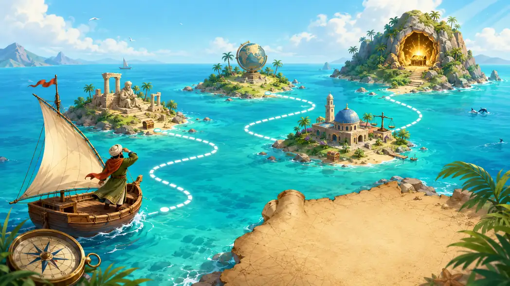

اكتب اسمك وابدأ الرحلة. ابن بطوطة ينتظرك عند ميناء الانطلاق.
✨ منصة مراجعة ممتعة وذكية
استعدّ للامتحان المحلي في رحلة لا تُنسى
من ميناء الانطلاق إلى مغارة التتويج، يرافقك ابن بطوطة عبر مسار بحري متعرّج بين جزر التاريخ والجغرافيا والتربية على المواطنة والمنهجية. في كل محطة سؤال وتحدٍّ وصوت ومفاجأة وجائزة، وفي النهاية تنتظرك شهادة الاستعداد.
🏝️ جزر المعرفة
🧭 مسار متعرّج تفاعلي
🔊 أصوات ومؤثرات
🎁 جوائز مرحلية
🏆 شهادة نهائية
تقدم الرحلة 0%

ابن بطوطة — رفيق الرحلة
الرحالة الحكيم والمرشديا صاحب الهمة، في كل جزيرة علماً جديداً، وفي كل محطة خطوة نحو التتويج. لا تتعجل؛ افهم ثم أجب، فالفهم هو الزاد الحقيقي في الطريق.
💬 رسالة ابن بطوطة: «من صبر على التعلم، وصل إلى كنز النجاح.»
⚡ الخبرة 0 XP
⭐ النجوم 0/60
🏅 الشارات 0/6
🎁 الجوائز 0/4
📍 المستوى مبتدئ
🗺️ المحطات المنجزة 0/20
أكمل 5 محطات لفتح أول جائزة مرحلية.
كل سؤال يمنحك فرصة لفهم الفكرة، وليس فقط اختيار جواب سريع.
لوحة الرحلة الكبرى
مسار بصري متعرّج يربط 20 محطة عبر أربع جزر معرفية وصولاً إلى مغارة التتويج.
🗺️ قصة الرحلة: تبدأ السفينة من ميناء الانطلاق، ثم تعبر جزيرة الزمن (التاريخ)، فـأرخبيل الخرائط (الجغرافيا)، ثم جزر المواطنة، وتنتهي في مغارة التتويج حيث الشهادة والكنز. بعد كل مجموعة من المحطات ستحصل على جائزة مرحلية أو مفاجأة جديدة.
📚 التاريخ
🌍 الجغرافيا
🤝 المواطنة
🛠️ المنهجية
🔵 متاحة
🟠 الحالية
🟢 منجزة
⚪ مغلقة
⛵أنت هنا
🌴
🦜
🐋
🌴
⚓
🦅
🚢
🐬
⏳ جزيرة الزمن — التاريخ
🗺️ أرخبيل الخرائط — الجغرافيا
🤝 جزر المواطنة
💎 مغارة التتويج
جزر الرحلة
تنظيم المضمون حسب المكونات والمحاور المعرفية.
🏭
جزيرة الزمن — التاريخ
6 محطات تراجع التحولات السياسية والاقتصادية والعسكرية في القرن 19 وبداية القرن 20.
- ازدهار الرأسمالية والإمبريالية
- الضغط الاستعماري على المغرب
- الحرب العالمية الأولى
- المشرق العربي وأزمة 1929
🌍
أرخبيل الخرائط — الجغرافيا
6 محطات في التكتلات الإقليمية وعناصر القوة والتنوع والتحديات.
- المغرب العربي: الوحدة والتنوع
- التكامل والتحديات
- الاتحاد الأوروبي ومكانته
- معيقات التكتلات الجهوية
🤲
جزر المواطنة
6 محطات تنمّي قيم المشاركة والمسؤولية وحل المشكلات الاجتماعية والحقوق.
- المشاركة حق وواجب
- المشاكل الاجتماعية ومعالجتها
- مؤسسة محمد الخامس للتضامن
- تخليق الحياة العامة والحقوق
📜
مغارة التتويج — المنهجية
محطتان أخيرتان لتدريب التلميذ على الوثائق والاستعداد الذكي للورقة.
- كيف أتعامل مع وثيقة تاريخية؟
- كيف أستعد للامتحان المحلي؟
- تنظيم الوقت والورقة والجواب
الشارات والجوائز
كل إنجاز يفتح شارة أو مكافأة ويقربك من الشهادة.
المعرض البصري
صور منجزة خصيصاً لهذا التطبيق لتجميل التجربة وتقوية هوية الرحلة.
بانوراما الجزر
تعطي للتلميذ إحساس المغامرة وتدعم مسار الرحلة المتعرج بين المحطات.
الماسكوت: ابن بطوطة
رفيق الرحلة الذي يقدّم التشجيع والنصائح ويمنح التطبيق روحاً إنسانية محببة.
خريطة الكنز
مرجع بصري للمسار، يساعد على تخيل تقدّم التلميذ من البداية إلى مغارة الشهادة.
✨
اللمسة النهائية: هذه النسخة صممت لتكون ممتعة للتلميذ ومفيدة للأستاذ في الوقت نفسه: رحلة مرئية، مسار واضح، محتوى قابل للتعديل، ومكافآت تشجع على الاستمرار دون فقدان الجدية التربوية.